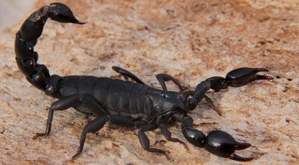

¿Donde viven?
El hábitat del escorpión
Los escorpiones se encuentran distribuidos por todo el planeta, con la excepción de la Antártida. A muchos lugares llegaron de la mano de los seres humanos y su capacidad de adaptación les ha permitido prosperar en esas zonas. También se cree que pudieron haber arribado dentro de algún tipo de carga, comenzando luego a poblar esos destinos. Otros cuentan que los escorpiones eran enviados a ciertos lugares en forma de represalia.
Los escorpiones están difundidos por todas las regiones cálidas del mundo –nunca sobrepasan los 50º de latitud N o S– y numerosas especies se han adaptado a los desiertos.
Habitan en el suelo, en grutas, bajo las piedras y a veces entran en las habitaciones humanas.
 Solo algunos géneros de escorpiones se caracterizan porque sus miembros son capaces de soportar temperaturas de alturas de más de 5,000 metros. Este tipo de escorpiones son pequeños en tamaño y viven por meses debajo de las rocas o en madrigueras cubiertas de nieve.La distribución de los escorpiones comprende regiones. subtropicales y tropicales de todo el mundo.
Solo algunos géneros de escorpiones se caracterizan porque sus miembros son capaces de soportar temperaturas de alturas de más de 5,000 metros. Este tipo de escorpiones son pequeños en tamaño y viven por meses debajo de las rocas o en madrigueras cubiertas de nieve.La distribución de los escorpiones comprende regiones. subtropicales y tropicales de todo el mundo.
Generalmente están ausentes de los climas gélidos de la Antártida y otras pequeñas áreas de frío intenso, pero hay registros de escorpiones viviendo en zonas del Himalaya, algo que vuelve a crear incógnitas sobre su gran capacidad de adaptación.

Muchas de las especies que viven en las regiones tropicales se instalan cerca de montículos de termitas y se alimentan casi exclusivamente de ellas.

Varias especies de pequeños escorpiones de menos de 35 mm se adentran a las zonas intertidales de la tierra y debido a ello, reciben el nombre de escorpiones litorales.
Ellos se alimentan de pequeños animales y de criaturas marinas en estado de descomposición.